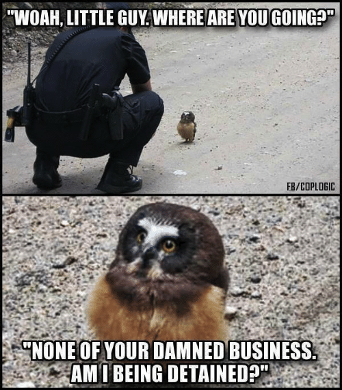

The author of this website, Richard Lorenzini, is a former police officer for the Cobb County, Georgia Police Department. Richard regularly uses his knowledge, training, and experience to help others understand their basic rights, how to approach police officers, and what to do when interacting with law enforcement agents.
AM I BEING DETAINED?!
An officer walks up to you and asks to talk.
You keep hearing the detained word throw around.
What does detained even mean?
DETAINED: during an investigation, an officer may keep you in their custody until they are certain you have not committed a crime.
Until the officer states you may leave, or are free to go, it is best to assume you are still detained.
How do I know if I am detained?
Apart from asking the officer, you may use context clues to determine if you are free to leave.
For instance, if an officer has pulled you over for a Traffic Stop, you are detained.
In most jurisdictions, an officer MUST have their emergency vehicle lights active during a Traffic Stop in order to detain you.
That's simple, but what about if it isn't a traffic stop?
Sometimes, it is best to politely ask the officer if you are free to leave.
Instead of asking, "Am I being detained?", try asking, "Am I free to leave, or do you need me to stay?"
What you ask is less important than how you ask it.
Also, always remember being a VICTIM of a crime means you are INVOLVED in the crime. Yes, as a victim, you are detained.
Okay, but I didn't commit a crime!
The officer likely knows something you don't know.
A simple example is a crime was committed in the area and you fit the description of the perpetrator.
The more willing you are to comply with the officer, the faster the officer can check your story and release you.
Ask questions, but be respectful of the officer's time.
The more respectful you are to the officer, the more willing the officer will be to answer all your questions.
The officer said I was FREE TO LEAVE but is in my way or grabbed me.
This is illegal and will be covered under UNLAWFUL ACTIONS BY AN OFFICER.
REMEMBER:
To detain, an officer must have reasonable suspicion that a crime was committed and you were involved.
They do not have to tell you their reason, but do have to tell you if you are detained.
If you feel your rights have been violated, get a copy of the police report at your local police station and contact a lawyer.
See something interesting? Click the box and learn more!